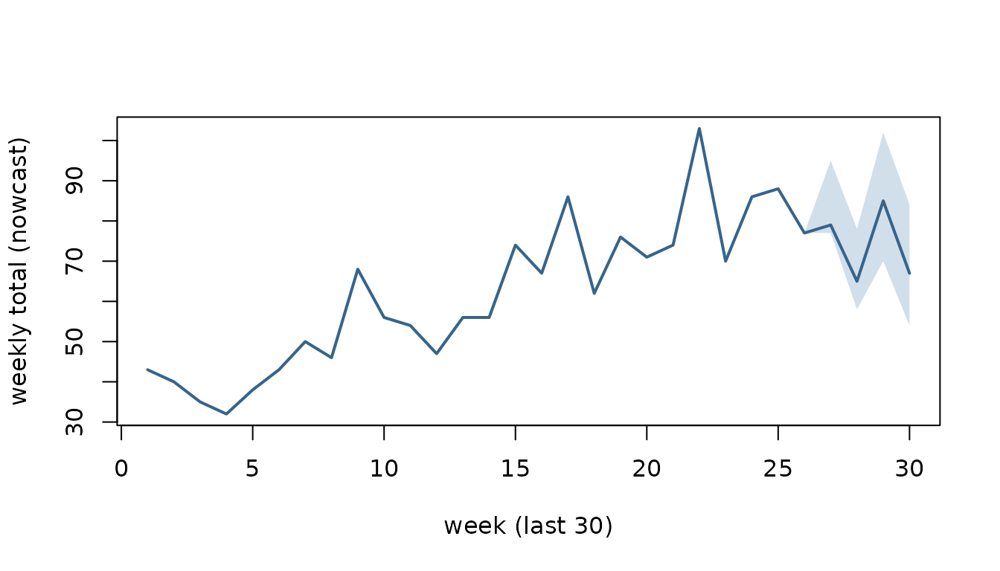

Nowcasting a reporting triangle with csfmt_ensemble_v3
Richard Aubrey White
Source:vignettes/nowcasting.Rmd
nowcasting.Rmdcsalert provides a small, draw-parallel surveillance
engine built around three S3 formats:
-
csfmt_reporting_triangle_v3— the reference-week × reporting-week input (who was reported when). -
csfmt_ensemble_v3—$dataplus, per measure, a matrix of Monte-Carlo$draws(rows = weeks, columns = simulations). Every analysis stage adds columns to the draws, so uncertainty propagates for free. - a quantile collapse of those draws (optionally
healed into
cstidy::csfmt_rts_data_v3for the usual plots/tables).
The analysis pipeline is: reporting triangle → nowcast → (rate / short-term trend / MEM thresholds / signal detection) → collapse. Alongside it sits a replay-based diagnostics harness — backtest → coverage (are the intervals honest?), revision (how much will today’s number still move?), and reporting completion (how fast does the data actually arrive?). This vignette walks the whole path on synthetic data.
library(data.table)
#>
#> Attaching package: 'data.table'
#> The following object is masked from 'package:base':
#>
#> %notin%
library(csalert)
#> csalert 2026.7.1
#> https://niphr.github.io/csalert/A synthetic reporting triangle
Real surveillance data arrives with a delay: a case with reference
week W may only be reported in week
W, W+1, W+2, … We simulate 70
weeks where most of a week’s cases are in within a week or two and a
tail dribbles in over a month.
weeks <- cstime::dates_by_isoyearweek$isoyearweek
i0 <- match("2023-01", weeks)
max_delay <- 5L
n_weeks <- 70L
delay_prob <- c(0.45, 0.30, 0.15, 0.07, 0.03) # P(delay = 0, 1, 2, 3, 4 weeks)
set.seed(1)
rows <- lapply(seq_len(n_weeks), function(w) {
ref_i <- i0 + w - 1L
n <- rpois(1, 60 + 25 * sin(2 * pi * w / 52)) # a seasonal signal
delay <- sample(0:(max_delay - 1L), n, replace = TRUE, prob = delay_prob)
data.table(isoyearweek_reference = weeks[ref_i], rep_i = ref_i + delay)
})
ll <- rbindlist(rows)
ll[, isoyearweek_reporting := weeks[rep_i]]
# "today" is the last reference week: drop everything not reported yet, so the
# most recent weeks are still incomplete (right-truncated) -- exactly the problem
# a nowcast solves.
as_of_i <- i0 + n_weeks - 1L
ll <- ll[rep_i <= as_of_i]
triangle_long <- ll[, .(numerator = .N),
by = .(isoyearweek_reference, isoyearweek_reporting)]
triangle_long[, `:=`(indicator = "example", location = "nation",
age = "total", sex = "total")]
head(triangle_long)
#> isoyearweek_reference isoyearweek_reporting numerator indicator location
#> <char> <char> <int> <char> <char>
#> 1: 2023-01 2023-04 4 example nation
#> 2: 2023-01 2023-01 23 example nation
#> 3: 2023-01 2023-03 10 example nation
#> 4: 2023-01 2023-02 20 example nation
#> 5: 2023-01 2023-05 1 example nation
#> 6: 2023-02 2023-03 17 example nation
#> age sex
#> <char> <char>
#> 1: total total
#> 2: total total
#> 3: total total
#> 4: total total
#> 5: total total
#> 6: total totalWrap it as a csfmt_reporting_triangle_v3. The
as_of boundary (the latest week we know about) is inferred
from the newest reporting week.
tri <- csfmt_reporting_triangle_v3(
triangle_long,
id_cols = c("indicator", "location", "age", "sex"),
reference_col = "isoyearweek_reference",
reporting_col = "isoyearweek_reporting",
value_col = "numerator"
)
attr(tri, "as_of")
#> [1] "2024-18"Nowcasting
nowcast_quasipoisson_v1() regresses each settled week’s
final total on the counts reported so far, then simulates the incomplete
recent weeks. It returns a csfmt_ensemble_v3: one row per
reference week and an n_sim-column matrix of draws of the
(completed) weekly total. Settled weeks are point masses at their
observed total; recent weeks carry the completion uncertainty.
ens <- nowcast_quasipoisson_v1(tri, max_delay = max_delay, n_sim = 500)
ens
#> <csfmt_ensemble_v3> 70 rows | 1 series | draws: numerator_nowcastedCollapse the draws to a quantile summary.
q <- ens_collapse(ens, probs = c(0.05, 0.5, 0.95))
tail(q[, .(isoyearweek,
lo = numerator_nowcasted_q05x0,
med = numerator_nowcasted_q50x0,
hi = numerator_nowcasted_q95x0)], 8)
#> isoyearweek lo med hi
#> <char> <num> <num> <num>
#> 1: 2024-11 70.00 70 70.00
#> 2: 2024-12 86.00 86 86.00
#> 3: 2024-13 88.00 88 88.00
#> 4: 2024-14 77.00 77 77.00
#> 5: 2024-15 77.00 79 95.00
#> 6: 2024-16 58.00 65 78.00
#> 7: 2024-17 70.00 85 102.00
#> 8: 2024-18 53.95 67 84.05The recent weeks have a widening interval (fewer reports in), the older weeks are pinned to their settled total:
show <- tail(q, 30)
xs <- seq_len(nrow(show))
plot(xs, show$numerator_nowcasted_q50x0, type = "n",
ylim = range(show$numerator_nowcasted_q05x0, show$numerator_nowcasted_q95x0),
xlab = "week (last 30)", ylab = "weekly total (nowcast)")
polygon(c(xs, rev(xs)),
c(show$numerator_nowcasted_q05x0, rev(show$numerator_nowcasted_q95x0)),
col = grDevices::adjustcolor("steelblue", 0.25), border = NA)
lines(xs, show$numerator_nowcasted_q50x0, lwd = 2, col = "steelblue4")
Is the nowcast any good? A replay backtest
The reporting triangle records when every count arrived, so
we can reconstruct exactly what was known at any past week and replay
the method against it. A “method” is any function
f(triangle) -> ensemble with its parameters baked in;
nowcast_evaluate_v1() replays it and scores the result into
two scale-free diagnostics per horizon (weeks-back from the as-of week;
0 = the current, least-observed week):
- coverage — does the 90% / 50% interval actually contain the settled truth that often? (interval honesty; target 0.90 / 0.50)
- revision — how far the published median sits from where it eventually settles, as a fraction of the truth: signed (bias), absolute (typical move), a 5–95% band, and the tail probabilities.
method <- function(x) nowcast_quasipoisson_v1(x, max_delay = max_delay, n_sim = 500)
as_of_weeks <- utils::tail(weeks[i0:as_of_i], 30) # replay the last 30 weeks
nowcast_evaluate_v1(tri, method, max_delay = max_delay,
as_of_weeks = as_of_weeks, horizons = 0:3, seed = 1)
#> horizon n coverage_50 coverage_90 median_signed median_abs q05
#> <int> <int> <num> <num> <num> <num> <num>
#> 1: 3 29 1.000 1.000 0.0000 0.0213 -0.0503
#> 2: 2 28 0.857 1.000 -0.0100 0.0375 -0.1151
#> 3: 1 27 0.741 0.926 0.0132 0.0536 -0.1733
#> 4: 0 26 0.462 0.808 -0.0844 0.1328 -0.2617
#> q95 p_gt_25 p_gt_50 method
#> <num> <num> <num> <char>
#> 1: 0.0305 0.0000 0 method
#> 2: 0.0677 0.0000 0 method
#> 3: 0.1261 0.0370 0 method
#> 4: 0.3085 0.1923 0 methodPass a named list of methods instead of one, and they are
replayed on the same paired draws (shared seed) and stacked
with a method column, so you can race several engines
head-to-head.
How fast does the data arrive? Reporting completion
reporting_completion() reads the delay ECDF off the
settled weeks: pct_wN is the pooled % of a reference week’s
cases reported once it has been observed for N weeks.
period = "month" / "year" slices it in time to
expose drift.
reporting_completion(tri, max_delay = max_delay)
#> indicator location age sex period n_settled mean_delay complete_by_md
#> <char> <char> <char> <char> <char> <int> <num> <num>
#> 1: example nation total total all 66 0.94 1
#> pct_w1 pct_w2 pct_w3 pct_w4 pct_w5
#> <num> <num> <num> <num> <num>
#> 1: 46.6 73.7 89.3 96.6 100The naming grammar
Every measure column is a self-describing name built and parsed by the same grammar, so downstream code never hard-codes strings.
csfmt_var("numerator", role = "nowcasted", q = 0.5) # -> the collapsed median column
#> [1] "numerator_nowcasted_q50x0"
csfmt_parse("numerator_nowcasted_q50x0") # -> back to its components
#> $measure
#> [1] "numerator"
#>
#> $role
#> [1] "nowcasted"
#>
#> $q
#> [1] 0.5Where next
- Add a rate with
ens_add_rate()(numerator vs a nowcasted denominator), a short-term trend withshort_term_trend(), MEM intensity thresholds withmem_thresholds_v1(), or exceedance detection withsignal_detection_hlm()— each just adds draw columns before the collapse. -
ens_collapse(heal = TRUE)returns acstidy::csfmt_rts_data_v3ready for the standard plotting/table helpers. - Race candidate engines head-to-head by passing several methods to
nowcast_evaluate_v1()and comparing their coverage / revision.